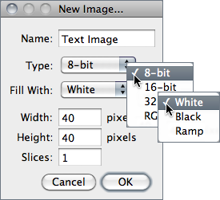
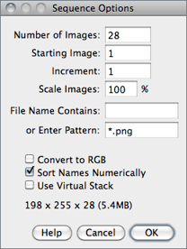
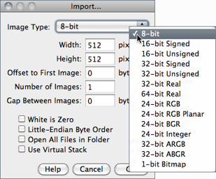
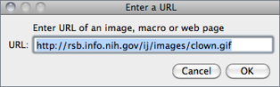
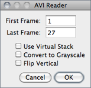
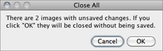
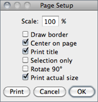

26
26.1
Contains commands for creating new images, stacks, hyperstacks or text windows.
26.1.1

Creates a new image window or stack. A dialog box allows you to specify the image title, type, dimensions and initial content.
Name is the title that will be used for the Window. Type is the image type: 8-bit grayscale, 16-bit grayscale (unsigned), 32-bit (float) grayscale or RGB color. Fill With (White, Black or Ramp) specifies how the image is initialized. Width and Height specify the image dimensions in pixels. Set Slices to a value greater than one to create a stack.
26.1.2
Alias for the command.
26.1.3
Creates a new text window with the title ‘Untitled.txt’.
, ,
26.1.4
Opens the contents of the internal ImageJ clipboard.
, ,
26.1.5
Opens the contents of the operating system clipboard.
, ,
26.2
Opens an image and displays it in a separate window. Image files must be in TIFF, GIF, JPEG, DICOM, BMP, PGM or FITS format, or in a format supported by a reader plugin. Also opens:
- ImageJ and NIH Image lookup tables (.lut extension).
- Tables (in tab-delimited text format) (.xls or .csv extension, see Results Table↑)
- Selections (.roi or .zip extension)
- Text files (.txt, .ijm, .js and .java extensions)
- …
, Image Types and Formats↑, Virtual Stacks↑, 9: Opening Files: FileOpen…, FileImport and Drag & Drop↓
9 Opening Files: , and Drag & Drop
While the command opens formats natively supported by ImageJ (images and non-images files), the submenu provides access to plugins for additional file types (e.g., reading ‘raw’ files, images in ASCII format or loading images over the network). Most of ImageJ’s Input/Output plugins are installed on this submenu.

26.3
Closes the current image and opens the next image (if any) in its directory. Holding Alt opens the previous image (if any) in its directory.
26.4
Opens example images hosted on the ImageJ Web site. These sample images are useful for creating, testing and debugging macros since routines can be applied to the same image, regardless of where the macro is run. Among all, probably the most used is blobs.gif: .
Sample images can be downloaded from http://imagej.nih.gov/ij/images/ or, in bulk, from either http://imagej.nih.gov/ij/download/sample-images.zip, or in Fiji↑, by running . The ‘AutoRun’ macro in the StartupMacros.txt file can then be used to change the default path of sample images, allowing a complete off-line usage of the submenu:
/* This macro calls the Prefs.setImageURL() method to change the default path of Sample Images (http://imagej.nih.gov/ij/images/) to a local subfolder of ImageJ’s directory named "samples". Note that Fiji provides this feature by default.
*/
macro "AutoRun" {
dir= getDirectory("imagej") + "samples";
if (File.exists(dir)) {
dir= replace(dir, " ", "%20");
if (startsWith(getInfo("os.name"), "Windows"))
dir= "/"+ replace(dir, File.separator, "/");
call("ij.Prefs.setImagesURL", "file://"+ dir +"/");
}
26.5
The submenu shows a list of the 15 recently opened files. Click on a filename to open it.
26.6
This submenu lists the installed image reader plugins.
Non--native Formats ↑, Acquisition plugins, Input/Output plugins, VirtualStackFromList macro, 9: Opening Files: FileOpen…, FileImport and Drag & Drop↑
26.6.1

Opens a series of images in a chosen folder as a stack. Images may have different dimensions and can be of any format supported by ImageJ (see Image Types and Formats↑ and HandleExtraFileTypes plugin). Non-image files (Scripts↑, .lut, .roi, RoiSet.zip, etc. ) are ignored.
Information — width × height × depth (size) — of the stack to be created is displayed at the bottom of the dialog.
Number of Images Specifies how many images to open.
Starting Image If set to n, import will start with the nth image in the folder.
Increment If set to ‘2’ every other image will be opened, if set to ‘3’ to every third image will be opened, etc.
File Name Contains Enter a string into this field and ImageJ will only open files whose name contains that string.
Enter Pattern Regular expressions (regex[?]) can be typed here for advanced filtering (see Basic syntax of regular-expressions↓).
Scale Images Setting a value less than 100% will reduce memory requirements. E.g., entering 50 reduces the amount of memory needed to open a stack by 75%.
Convert to RGB Allows a mixture of RGB and grayscale images to be opened by converting all the sequence to RGB. Note that if this option is unchecked and the first imported image is 8-bit then all the remaining images in the sequence will be converted to 8-bit. Checking this option, circumvents this issue.
Sort Names Numerically When checked, the stack will be opened in numeric file name order (e.g., ‘name1.tif’, ‘name2.tif’, ‘name10.tif’) instead of alphanumeric order (e.g., ‘name1.tif’, ‘name10.tif’, ‘name2.tif’). DICOM files in the same series (tag# 0020, 0011) are always sorted by the image number (tag# 0020,0013). The List Stack Tags macro, part of the ListDicomTags macro set, lists the values of the image number and image series tags.
Use Virtual Stack When checked, images are opened as a read-only virtual (disk-resident) stack using a version of the Virtual Stack Opener plugin. This allows image sequences too big to fit in RAM to be opened, but access time is slower and changes are lost when switching to a different image in the stack (see Virtual Stacks↑). Note the following consequences of enabling this option:
-
- Image Overlays↑ are not loaded
- If the folder contains tiff stacks, only the first slice of those stacks will be imported (with RAM resident stacks, all slices are imported and concatenated into the sequence [see ] )
, OpenSeriesUsingFilter macro,
Table 3 Regular-expressions basic syntax summary. For more information on regex filtering see this Java tutorial.
| Regex Syntax (Character Classes) | Example | Meaning | |
| [ ] | Delimit the set of characters to match | [aA] | Either lower or upper case A |
| - | Character ranges | [0-9] | Any digit (from 0 through 9) |
| . | Any character | [0-9]. | A digit plus any other character |
| * | Zero or more of the preceding item | .* | Any character sequence |
| ? | Zero or one of the preceding item | [0-9]? | An optional digit |
| + | One or more of the preceding item | [0-9]+ | At least a digit |
| ^ | Negation | [^0-9] | Any character that is not a digit |
| && | AND (Intersection) | [0-9&&[^3]] | A digit that is not 3 |
| | | OR (Alternation) | [0-9]|[a-zA-Z] | A digit or lower or upper case letter |
10 Reducing Memory Requirements When Importing Images
Since ImageJ 1.44d, the command no longer features the Convert to 8-bit Grayscale checkbox. This option was used to reduce memory requirements but used different scaling for each imported image.
26.6.2

Use this command to import images that are not in a file format directly supported by ImageJ. You will need to know certain information about the layout of the image file, including the size of the image, and the offset to the beginning of the image data.
Interleaved RGB images have pixels stored contiguously (rgbrgbrgb…) in a single image plane. Planar RGB images have the red, green and blue image data stored in separate 8-bit sample planes. ImageJ saves RGB images (both TIFF and raw) in interleaved format.
Image Type There are fourteen choices depicted above. 16-bit signed integer images are converted to unsigned by adding 32,768. 1-bit Bitmap images are converted to 8-bit.
Image Width The number of pixel in each row of image data.
Image Height The number of rows in the image.
Offset to First Image The number of bytes in the file before the first byte of image data.
Number of Images The number of images stored in the file. If this value is greater than the actual number of images the resulting stack will get truncated to the actual size.
Gap Between Images The number of bytes from the end of one image to the beginning of the next. Set this value to width × height × bytes-per-pixel × n to skip n images for each image read.
White is Zero Should be checked if black pixels are represented using numbers that are less than the numbers used for white pixels. If your images look like photographic negatives, changing this field should fix the problem.
Little-Endian Byte Order Probably needs to be checked when importing 16-bit or 32-bit grayscale images from little-endian machines such as Intel based PCs.
Open All Files in Folder If checked, ImageJ will import all the images in the folder as a stack. The images must all be the same size and type.
Use Virtual Stack Images are imported as virtual stacks.
26.6.3
Opens an ImageJ or NIH Image lookup table, or a raw lookup table. The raw LUT file must be 768 bytes long and contain 256 reds, 256 blues and 256 greens. If no image is open, a 256 × 32 ramp image is created to display the LUT. Note that lookup tables with file names ending in .lut can also be opened using or drag and drop.
26.6.4
Opens a tab-delimited text file as a 32-bit real image (see Text Images↓). The image’s width and height are determined by scanning the file and counting the number of words and lines. For text files with integer values no larger than 255, use to convert to 8-bit. Before converting, disable Scale When Converting in to prevent the image from being scaled to 0--255.
26.6.5
Opens a text file. Note that text files can also be opened using or drag and drop.
26.6.6

Downloads and displays known formats to ImageJ specified by a URL. Other URLs ending with ‘/’ or ‘.html’ are opened in the user’s default browser. The Input URL is saved in the ImageJ preferences file and retrieved across IJ restarts.
It is also possible to open zip archives, using a URL, that contain multiple DICOM images. Some example URLs are:
- http://imagej.nih.gov/ij/images/ct.dcm
- file:///Macintosh HD/images/Nanoprobes.tif
- file:///D:images\neuron.tif
- http://imagej.nih.gov/ij/ (opens the ImageJ website)
26.6.7
Opens an ImageJ table, or any tab or comma-delimited text file (see Results Table↑). Note that .csv and .xls files can also be opened by drag and drop.
26.6.8
Opens a stack, or virtual stack, from a text file or URL containing a list of image file paths [11]. The images can be in different folders but they must all be the same size and type. The Virtual Stack From List macro demonstrates how to generate a list of images and then use that list to open the images as a virtual stack. The OpenStackUsingURLs macro demonstrates how to how to open an image series from a remote server.
26.6.9
Opens a TIFF file as virtual stack (see Virtual Stacks↑ and 4: Opening Virtual Stacks by Drag & Drop↑).
26.6.10

Uses a built in version of the AVI reader plugin to open an AVI file (JPEG or PNG compressed, or uncompressed) as a stack or virtual stack (one slice per video frame) [12]. Animation speed is retrieved from image frame rate. AVI files can also be opened using or drag and drop but macros must use this command to gain access to the dialog box options.
Please note that ImageJ only supports a restricted number of AVI formats including various YUV 4:2:2 and 4:2:0 compressed formats. MJPG (motion-JPEG) formats are not read correctly. (cf. plugin source code).
The dialog promt allows you to choose if frames should be converted to 8-bit grayscale or flipped vertically. For large files, an option to open the movie as a virtual stack is also available (see Virtual Stacks↑). It is also possible to specify the starting and ending frame. Enter 0 (zero) to specify the last frame, − 1 to specify the second last frame, etc.
26.6.11
Imports a two column text file, such as those created by , as a polygon selection. The selection is displayed in the current image or, if the current image is too small, in a new blank image. Coordinates of active selection (at evenly spaced one pixel intervals) can be retrieved using the List coordinates options in .
26.7
Closes the active image.
26.8

Closes all open images. An alert is displayed if there are unsaved changes.
26.9
Saves the active image in TIFF format, the ‘default’ format of ImageJ (cf. 3: Image Types: Lossy Compression and Metadata↑). To save only a selected area, create a rectangular selection and use the command. Note that and are redundant commands.
26.10
Use this submenu to save the active image in TIFF, GIF, JPEG, or ‘raw’ format. Can also be used to save measurement results, lookup tables, selections, and selection XY coordinates.
26.10.1
Saves the active image or stack in TIFF format in redundancy with . TIFF is the only format (other than ‘raw’) that supports all ImageJ data types (8-bit, 16-bit, 32-bit float and RGB) and the only format that saves spatial and density calibration. In addition Selections↑ and Overlays↑ are also saved in the TIFF header.
By default, 16-bit and 32-bit images are saved using big-endian byte order. Check Save TIFF and Raw in Intel Byte Order in the dialog box to save using little-endian byte order.
26.10.2
Saves the active image in GIF format. RGB images must first be converted to 8-bit color using using . The value to be used as the transparent index (0--255) can be set in the dialog box. Stacks are saved as animated GIFs. Use (or right-click on the on the play/pause icon that precedes the stack slider) to set the frame rate.
26.10.3
Saves the active image in JPEG format. Edit JPEG Quality dialog box to specify the JPEG compression level (0--100). This value is shown on the title of the save dialog prompt. Lower values produce smaller files but poorer quality. Larger values produce larger files but better quality. Color sub-sampling is disabled when the value is set to 100, reducing the likelihood of color artifacts. By default, the DPI in the JPEG header is set to 72. For a higher value, use a unit of inch in the dialog. E.g., setting Distance in Pixels to 300, Known Distance to 1 and Unit of Length to ‘inch’ will set the [?]DPI to 300.
Overlays↑ are embedded when saving in Jpeg format (see ).
11 Warning on JPEG Compression
The JPEG format uses Lossy Compression↑ that leads to severe artifacts that are not compatible with quantitative analyses. As such, it should only be used for presentation purposes (if file size is an issue), but even then a lossless format such as PNG is probably more suitable.
{kind=link}
| Original | JPEG copy (75% quality) | Difference |

26.10.4
Saves the active image as a spreadsheet compatible tab-delimited text file. Calibrated and floating-point images are listed with the precision specified by Decimal places in For RGB images, each pixel is converted to grayscale using the formula gray = (red + green + blue) ⁄ 3 or the formula gray = 0.299 × red + 0.587 × green + 0.114 × blue if Weighted RGB to Grayscale Conversion is checked in
26.10.5
Saves the active image or stack as a TIFF file inside a compressed ZIP archive.
26.10.6
Saves the active image or stack as raw pixel data without a header. 8-bit images are saved as unsigned bytes, unsigned 16-bit images are saved as unsigned shorts and signed 16-bit images (e.g., ) are saved as signed shorts. 32-bit images are saved as floats and RGB images are saved in three bytes per pixel (24-bit interleaved) format. 16-bit and 32-bit (float) images are saved using big-endian byte order unless Export Raw in Intel Byte Order is checked in the dialog box.
26.10.7

Saves a Stack or a hyperstack as an image sequence.
Format Specifies the output format that can be set to either BMP, FITS, GIF, JPEG, PGM, PNG, Raw, Text Image, TIFF, or Zip (cf. Image Types and Formats↑). In IJ 1.44 and later, Overlays↑ are embedded when saving in JPEG or PNG format.
Name Specifies the leading string that will be common to all numeric filenames.
Start At (Stacks only) Specifies the starting number of the sequence.
Digits (1-8) The number digits of the incremental sequence. Filenames are padded with leading zeroes.
Use slice labels as filenames (Stacks only) If checked, each slice will be saved with its own label (the image subtitle displayed above the image, see ) and no numeric sequence will be used.
With hyperstacks, images are saved using ‘Name_t d_z d_c d’ in which d is the incremental number of specified Digits; t, the frame; z, the slice and c, the channel, so e.g., for the depicted snapshot the first image would be saved as ‘mitosis_t001_z001_c001.tif’.
26.10.8

Frame Specifies the frame frequency. The proposed value is read from and , as long as the unit of Frame Interval is ‘sec’.
26.10.9
Saves the active image in PNG (Portable Network Graphics) format. All image types, except RGB, are saved as 8-bit PNGs. 16-bit images are saved as 16-bit PNGs. With 8-bit images, the value to be used as the transparent index (0--255, -1 for “none”) can be set in the dialog box. Overlays↑ are embedded when saving in PNG format.
26.10.10
Saves the active image in FITS (Flexible Image Transport System) format [13].
26.10.11
Saves the active image’s lookup table to a file. The 768 byte file consists of 256 red values, 256 green values and 256 blue values.
26.10.12
Exports the contents of the ‘Results’ window as a tab-delimited or comma-delimited (.csv) text file. Prior to ImageJ 1.44b this command used to be named ‘Measurements…’.
26.10.13
Saves the current area selection boundary to a file, that can be later retrieved using to restore the selection. Active Selections↑ and Overlays↑ are saved in the TIFF header by default (see ).
26.10.14
Exports the XY coordinates of the active ROI as a two column, tab-delimited text file. ROI coordinates can also be retrieved using the List coordinates option in , that tabulates ROI coordinates at evenly spaced one pixel intervals.
26.11
Reloads the active image, stack or hyperstack from disk, reverting it to its last saved state. It is actually a shortcut for closing the window without saving, and then reopening it. Note that it may not work with Non--native Formats ↑ opened through external plugins such as the LOCI Bio-Formats library.
26.12

The Page Setup dialog allows you to control the size of printed output, plus other printing options:
Scale Values less than 100% reduce the size of printed images and values greater than 100% increase the size. 100% corresponds to 72 pixels per inch (ppi[?]), about the unzoomed screen size of the image. The size of the printed image is determined by the Scale value and the width and height of the image in pixels. Spatial calibration is ignored.
Draw border If checked, ImageJ will print a one pixel wide black border around the image.
Center on page If checked, the image will be printed in the center of the page instead of in the upper left corner.
Print title If checked, the title of the image will be printed at the top of the page.
Selection only If checked, current selection will be printed instead of the entire image.
Rotate 90○ If checked, the image will be rotated 90○ to the left before being printed.
Print actual size Considers the DPI information in the image header (typically 72, cf. ). For a higher value, use a unit of inch in the dialog. E.g., setting Distance in Pixels to 300, Known Distance to 1 and Unit of Length to ‘inch’ will set the DPI to 300.
26.13
Prints the active image. The size of the printed image will normally be slightly less its size on the screen (unzoomed). Use the dialog to increase of decrease the size of printed images. Images larger than the page are scaled to fit. Overlays↑ are embedded when printing images.
26.14
Prompts you to save all unsaved images and then exits. You can also exit ImageJ by clicking on the close button in its window’s title bar.